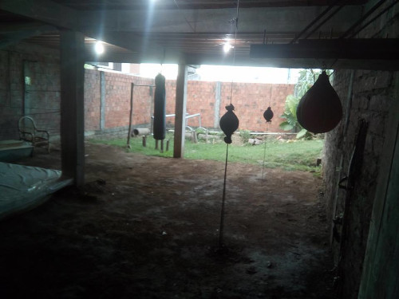
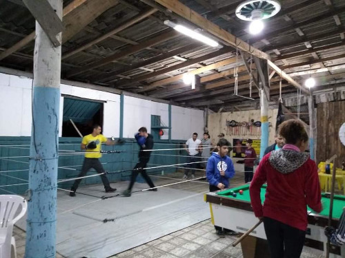
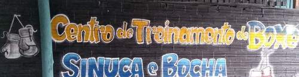

História da Academia Ferrari Team
A Academia Ferrari Team nasceu da paixão e da perseverança do técnico Rodrigo Ferrari e de sua esposa, Vitória A. Ferrari, atual árbitra da FGB e CBBoxe. Juntos, eles construíram um legado no mundo do boxe, trilhando um caminho cheio de desafios e conquistas.
Primeiros Passos: A Superação no Porão
A história da academia começou em um momento de dificuldade para Rodrigo. Sem um local adequado para treinar após a mudança de seu mestre, a motivação para criar seu próprio espaço se tornou uma necessidade. Com as próprias mãos e muita improvisação, Rodrigo construiu um local de treino em um porão rústico, sem portas e com chão de terra batida. A precariedade do espaço era evidente, e em dias de chuva, os treinos exigiam o uso de botas em meio à lama.

Do Porão ao Galpão: Uma Nova Fase
Uma oportunidade surgiu com a possibilidade de montar uma academia em um galpão. Em parceria com seu pai, Rodrigo transferiu seus equipamentos para o antigo espaço, onde seu pai abriu um bar com mesas de sinuca e cancha de bocha.

A ideia inicial era simples: sair do barro e ter um local fechado para aprimorar os treinos.

Foi também nesse período que Rodrigo conheceu Vitória. O amor floresceu, culminando em um pedido de casamento inesquecível dentro do ringue. 🥊 💓
Formalização e Expansão: O Nascimento da Academia Ferrari Team
Com a notícia de que a família iria crescer com a chegada de Ágatha, Rodrigo e Vitória sentiram a necessidade de formalizar o sonho. Decidiram alugar um espaço comercial próprio, marcando o início oficial da Academia Ferrari Team
Mais um integrante da família surgiu, Thomas veio para impulsionar ainda mais a motivação destes dois. Com o crescimento da família, a academia se desenvolveu. O espaço inicial, embora representasse um avanço significativo, logo se tornou pequeno para a crescente demanda de alunos. A paixão pelo boxe e a dedicação dos professores atraíram cada vez mais interessados, impulsionando a necessidade de expansão para um local maior. O número de alunos continuava a crescer, motivando um investimento significativo na reforma e na estrutura do local de treinamento, moldando o espaço que a academia possui atualmente.
Transformação Social: O Projeto Atual
Após anos de dedicação ao ensino e ao desenvolvimento de atletas, Rodrigo e Vitória, em parceria com o professor Alencar, amigo de adolescência e antigo companheiro de treino de Rodrigo, decidiram transformar a academia em um projeto social. O objetivo principal é oferecer oportunidades para jovens, proporcionando-lhes a vivência do estilo de vida das artes marciais e do esporte como ferramenta de desenvolvimento pessoal e social. Dentro deste projeto, o termo "Engenharia do Boxe" se tornou o nome da oficina focada no desenvolvimento de atletas das categorias cadete e juvenil.
Assim, a Academia Ferrari Team continua sua jornada, não apenas como um centro de treinamento de boxe, mas como um farol de esperança e oportunidade para a comunidade, construindo um futuro mais promissor através do esporte.
Então é isso! Espero que tenha gostado do nosso artigo com essa curiosidade sobre a Academia e seus professores.